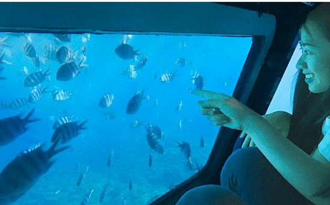
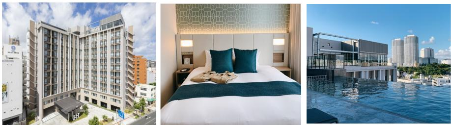
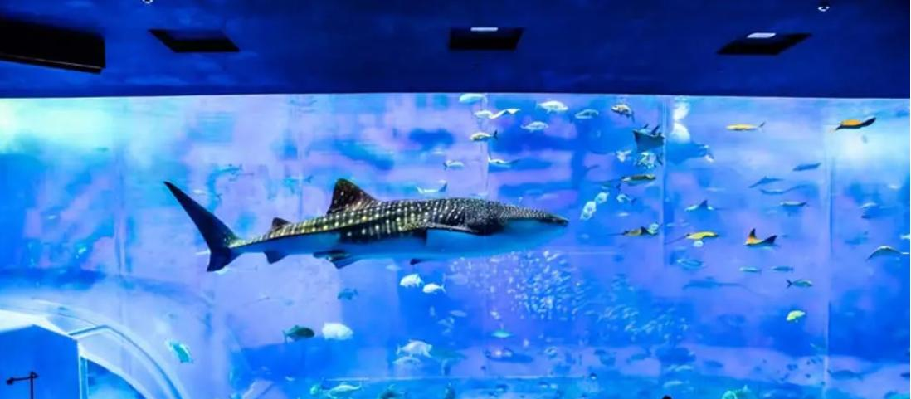
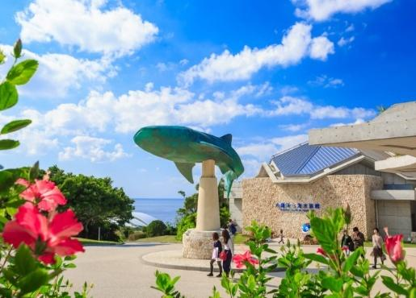
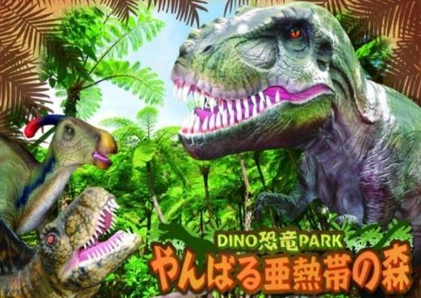
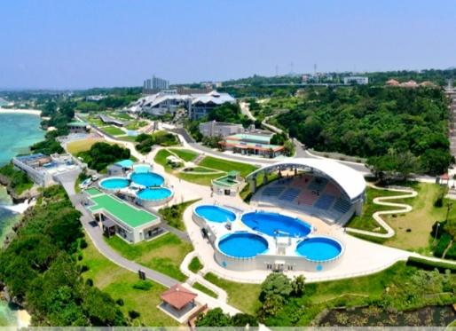
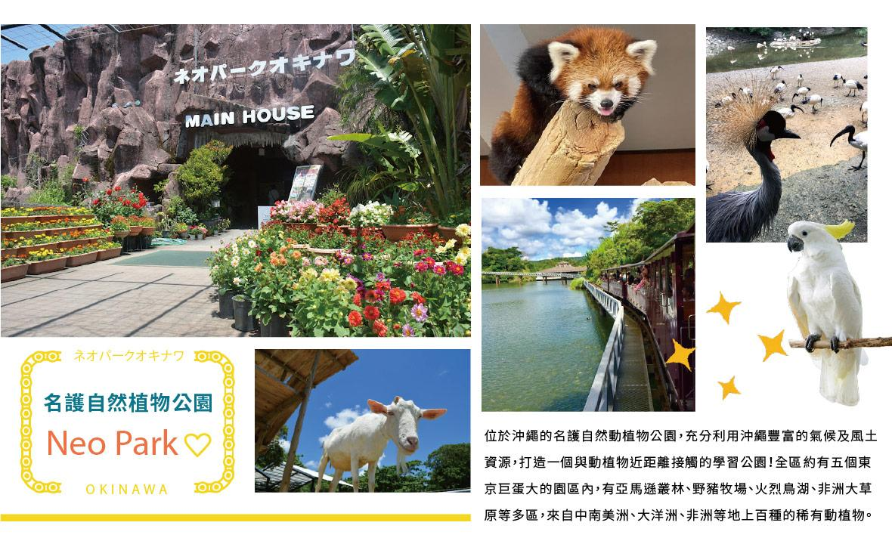
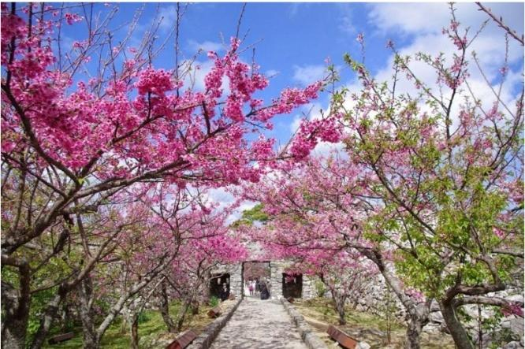
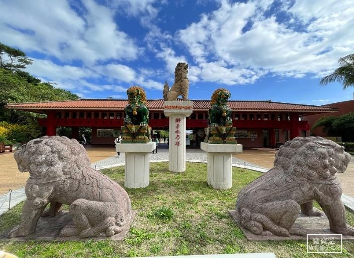
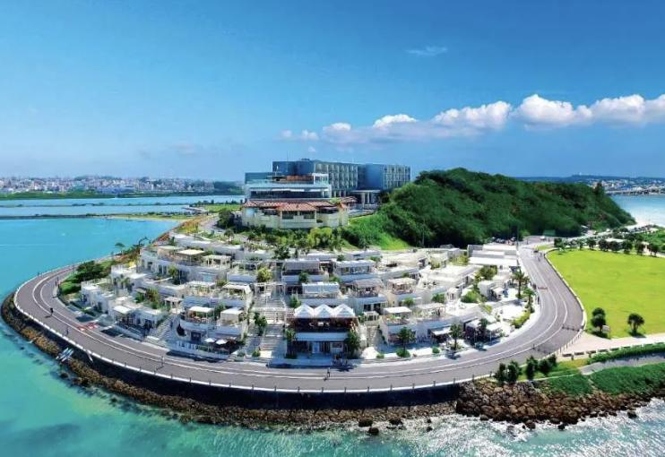

DAILY ITINERARY
每日行程
顯示全部四天THU・第一天01.21
ARRIVAL & OCEAN
抵達沖繩・海底世界初體驗
桃園機場那霸空港銀河探險號半潛水艇飯店


TRIP HIGHLIGHTS
第一天旅遊亮點
沖繩・東方夏威夷
沖繩位於日本最南端的琉球群島，海色襯托出繽紛多彩的島嶼景觀。抵達後便從海洋開始認識這座南國島嶼。
銀河探險號半潛水艇
前往探尋多達 68 科、260 種珊瑚的海域；這片廣闊海域蘊藏 2,000 多種海洋生物，可透過船艙觀景窗欣賞珊瑚礁間悠游的熱帶魚群。
若風浪過大或遇不可抗力因素無法成行，旅行社原表註明不另退費。
那霸休伊特渡假飯店
2021 年開幕的準五星飯店，採用席夢思名床；13 樓設高空無邊際溫水泳池，白天可俯瞰市景，夜間安排 3D 全息光影秀。
便利交通與豐盛早餐
單軌安里站步行約 3 分鐘、國際通東口近在咫尺，鄰近 24 小時超市與居酒屋。早餐約有 170 種選擇，並可自行搭配原創漢堡。
更多：飯店特色與不佔床規定
飯店於 2021 年開幕，全客房採用席夢思名床；13 樓設高空無邊際溫水泳池，晚上有 3D 全息光影秀。早餐主打約 170 種選擇及自製原創漢堡。六歲（不含六歲）以下才可不佔床。
FRI・第二天01.22
AQUARIUM & SAKURA
海洋博・恐龍森林・粉紅櫻花公路
海洋博公園美麗海水族館DINO 恐龍公園八重岳櫻之森公園




TRIP HIGHLIGHTS
第二天旅遊亮點
沖繩海洋博公園
為紀念 1975 年沖繩國際海洋博覽會而設立，占地約 70 萬平方公尺。除了美麗海水族館，園內還有熱帶、亞熱帶都市綠化植物園、沖繩鄉土村及歌謠植物園，可從自然、人文與歷史多面向認識沖繩。
美麗海水族館・黑潮之海
以「與沖繩海洋有約」為概念，規劃「珊瑚礁之旅」、「黑潮之旅」及「深海之旅」三層次展區。主缸「黑潮之海」可觀察約 8.6 公尺長的鯨鯊直立進食，以及大型鬼蝠魟翩翩迴游。
從珊瑚淺海走入深海
參觀動線由淺而深，可在開放式觸摸池接觸海星、海參，在「珊瑚之海」欣賞人工養殖的珊瑚，最後於微光中感受深海生態。館外還可眺望翡翠海色與伊江島。
DINO 恐龍森林與八重岳
走進山原亞熱帶森林中的恐龍主題場景，接著前往本部八重岳櫻之森公園欣賞寒緋櫻。原表列花期約為 1 月中旬至 2 月上旬，實際花況仍須看天候。
更多：水族館重點與賞櫻提醒
水族館以「與沖繩海洋有約」為概念，可從近海礁湖一路探索至深海生態。櫻花最佳觀賞期會受當年氣候影響，原行程日期不代表保證盛開。
SAT・第三天01.23
NATURE & HERITAGE
熱帶自然探險・世界遺產賞櫻
名護鳳梨園NEO PARK今歸仁城跡


TRIP HIGHLIGHTS
第三天旅遊亮點
名護鳳梨園・南國植物樂園
園內栽種約 120 種鳳梨，從食用品種到觀賞品種皆有。搭乘附語音導覽的自動駕駛鳳梨號，穿梭綠意小徑、小瀑布、繽紛花草與風獅爺造景。
鳳梨火車探險
由停車場搭乘鮮黃色鳳梨造型接駁火車前往園區入口，途中經過鳳梨田與大型鳳梨雕像，在音樂與微風中展開熱帶冒險。
NEO PARK 名護自然動植物公園
占地約 22 公頃，重現亞馬遜、非洲與大洋洲等熱帶環境，飼養超過 100 種動物。園內可見小熊貓、近距離餵食動物、鳥類表演，以及帶有沖繩歷史風情的蒸氣小火車。
世界遺產・今歸仁城跡
這裡曾是三山時代北山王居城，1416 年北山滅亡後仍為琉球王府官員駐守據點。2000 年以「琉球王國的城及相關遺產群」之一列入世界遺產。
沖繩寒緋櫻
今歸仁城種植沖繩常見的寒緋櫻，花色比染井吉野櫻濃，開花也較早。通常約 1 月中旬至 2 月上旬盛開，櫻花祭多安排於 1 月下旬至 2 月上旬；最佳觀賞期仍受當年氣候影響。
更多：今歸仁城與花期
今歸仁城跡於 2000 年列入世界遺產。寒緋櫻大約從每年 1 月中旬開至 2 月上旬，櫻花祭通常在 1 月下旬至 2 月上旬舉行；實際花況仍受氣候影響。
SUN・第四天01.24
CULTURE & FAREWELL
琉球文化・鐘乳石奇景・海景告別
沖繩世界文化王國玉泉洞波之上神宮瀨長島那霸空港桃園機場


TRIP HIGHLIGHTS
第四天旅遊亮點
沖繩世界文化王國
園區保存琉球王國時代延續至今的傳統工藝與文化，是集中認識沖繩歷史、表演與手作技藝的主題園區。
王國村・琉球城下町
重現琉球王朝時代風貌，可接觸琉球玻璃、陶器、傳統手工機織與花色印染，也可觀賞傳統大鼓隊民俗豐年祭舞。原表列演出時間為 10:30、12:30、14:30。
毒蛇博物館公園
設有世界級毒蛇資料館、活蛇與爬蟲類展示，以及毒蛇、貓鼬相關表演，呈現沖繩特殊的蛇類生態文化。
玉泉洞・三十萬年自然奇景
玉泉洞歷經約 30 萬年形成，全長約 5 公里，為沖繩本島最長洞穴、日本第二長地下洞窟。目前開放景觀精華約 800 多公尺，可觀賞約 95 萬支石筍與各式天然鐘乳石。
波之上神宮
佇立海邊斷崖，昔日是人們向 NIRAI-KANAI 祈禱的聖地。往來那霸港的船隻會遙望神殿，祈求航行安全；波上宮居琉球八社之首，並被尊為「當國第一神社」。
小希臘・瀨長島 Umikaji Terrace
2015 年開幕，距那霸機場約 10 多分鐘車程。依山而建的白色建築背山面海，約有 34 間商店與露台，可享受餐飲、購物、海景與日落，也是本次旅程的最後一站。
更多：表演時間與返程
琉球大鼓隊原表列演出時間為 10:30、12:30、14:30；若因行程未能觀賞，原表註明恕不退費。CI121 預定 20:25 自那霸起飛，21:05 抵達桃園。
Others
其他資訊
團費已包含
- 機場往返新竹接送
- 團體履責保險 300 萬及意外醫療險 20 萬
- 全程餐食與行程內景點門票
- 當地市區酒店住宿
- 當地網卡
- 導遊、司機、領隊小費
- 兩千萬履約險
- 全程無理餐(較高餐標特色餐*2)+不進免稅店
- 住宿：那霸休伊特渡假飯店(Hewitt Resort Naha)準五星新飯店,國際通走路10分鐘內到